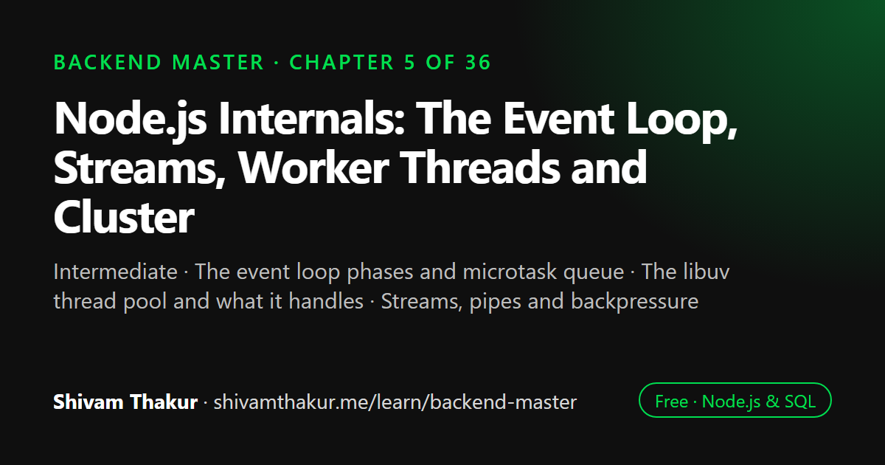

Chapter 5 of 36 · Intermediate
Node.js Internals: The Event Loop, Streams, Worker Threads and Cluster
Node.js Internals — The Event Loop, Streams, Threads and Why Node Is Fast

Node.js runs your JavaScript on one thread and delegates I/O to the operating system and a thread pool. This chapter explains the event loop phases, microtasks, why blocking code freezes every request, streams and backpressure, worker threads for CPU work and the cluster module, with measured examples.
In this chapter you will learn
- The event loop phases and microtask queue
- The libuv thread pool and what it handles
- Streams, pipes and backpressure
- Worker threads for CPU-bound work
- Scaling across cores with cluster
5.0 Why This Chapter Matters
Node.js is described with a sentence that sounds like a contradiction: "single-threaded, yet handles thousands of concurrent connections." How?
If you don't know the answer, you will eventually write code that freezes your entire server for every user at once (it's the most common serious Node bug there is). If you do know the answer, you can:
- Predict the order in which async code runs.
- Know exactly which operations block and which don't.
- Handle gigabyte files without running out of memory.
- Use all your CPU cores.
- Debug "the server randomly stops responding."
This is the most "internals-heavy" chapter in Part 1, and it pays off in every chapter after.
5.1 The Problem Node Solves: Waiting
Think about what a typical request handler does:
const user = await db.query('SELECT ...'); // wait ~5 ms
const orders = await db.query('SELECT ...'); // wait ~5 ms
await sendEmail(user.email); // wait ~200 msThe CPU work is microseconds. The rest is waiting for I/O (input/output: network, disk, database). Waiting costs nothing for the CPU, but it needs a plan for what to do while waiting.
Real-Life Analogy: One Waiter vs One Waiter Per Table
Thread-per-request model (classic Apache/Java): every table gets its own dedicated waiter. A waiter takes the order, walks to the kitchen, stands there staring at the chef until the food is ready, and carries it back. If you have 10,000 tables, you need 10,000 waiters, and each one costs salary (memory: ~1 MB+ per thread) and they trip over one another (context switching).
Event-driven model (Node): one very fast waiter. Takes table 1's order, hands it to the kitchen, and immediately goes to table 2. When the kitchen rings a bell ("order up for table 1!"), the waiter delivers it. One waiter can serve many tables because he never stands around waiting.
The catch: if the one waiter decides to personally cook a 20-minute dish, nobody gets served. Hold on to that; it's the main danger of Node (§5.6).
5.2 What Is Node.js Made Of?
┌──────────────────────────── YOUR JAVASCRIPT ─────────────────────────────┐
│ │
│ ┌───────────────┐ Node.js bindings (C++) │
│ │ V8 │◀────────────────────────────────┐ │
│ │ JS engine: │ │ │
│ │ parses & │ ┌───────────────────────────────────────────┐ │
│ │ runs your JS, │ │ libuv │ │
│ │ JIT compiles, │ │ ┌─────────────┐ ┌───────────────────┐ │ │
│ │ garbage │ │ │ EVENT LOOP │ │ THREAD POOL │ │ │
│ │ collects │ │ │ (1 thread) │──▶│ 4 threads default │ │ │
│ └───────────────┘ │ └──────┬──────┘ │ fs, crypto, zlib, │ │ │
│ │ │ │ dns.lookup │ │ │
│ │ ▼ └───────────────────┘ │ │
│ │ OS async I/O: epoll (Linux), kqueue │ │
│ │ (macOS), IOCP (Windows): sockets & more │ │
│ └───────────────────────────────────────────┘ │
└──────────────────────────────────────────────────────────────────────────┘Three ingredients:
- V8: Google's JavaScript engine (same one in Chrome). Compiles JS to machine code on the fly (JIT) and manages memory.
- libuv: a C library that provides the event loop, a thread pool, and cross-platform async I/O.
- Node's core modules and C++ bindings:
http,fs,net,crypto,stream… glue between JS and the system.
JavaScript itself runs on ONE thread, the "main thread." But the system around it uses the OS kernel's async facilities and a small pool of helper threads to do the waiting and slow work in parallel.
5.3 The Call Stack, in Brief
When you call a function, it's pushed on the call stack; when it returns, it's popped. JavaScript has one call stack, so it can do exactly one thing at a time.
function c() { console.log('c'); }
function b() { c(); }
function a() { b(); }
a(); push a → push b → push c → (print "c") → pop c → pop b → pop aA runaway recursion fills the stack and throws RangeError: Maximum call stack size exceeded (Chapter 2 of the DSA book). While the stack is busy, nothing else can run, which is the core of why blocking is so dangerous.
5.4 The Event Loop
The event loop is a perpetual loop with one job: whenever the call stack is empty, pick the next waiting callback and run it.
A simple version
┌─────────────────────────────────────────────────┐
│ 1. Run your script top to bottom (call stack) │
│ 2. Is there any pending callback ready to run? │
│ yes → run it to completion → back to 2 │
│ no → wait for I/O / timers → back to 2 │
│ 3. Nothing pending and nothing waiting? → exit │
└─────────────────────────────────────────────────┘The real version: phases
Each pass ("tick") through the loop visits phases, each with its own queue of callbacks:
┌───────────────────────────┐
┌─▶│ timers │ setTimeout / setInterval callbacks that are due
│ └─────────────┬─────────────┘
│ ┌─────────────▼─────────────┐
│ │ pending callbacks │ some deferred system-level I/O callbacks
│ └─────────────┬─────────────┘
│ ┌─────────────▼─────────────┐
│ │ idle, prepare │ internal use
│ └─────────────┬─────────────┘
│ ┌─────────────▼─────────────┐ ┌───────────────┐
│ │ poll │◀─────│ incoming: │
│ │ retrieve new I/O events; │ │ connections, │
│ │ run I/O callbacks │ │ data, etc. │
│ └─────────────┬─────────────┘ └───────────────┘
│ ┌─────────────▼─────────────┐
│ │ check │ setImmediate callbacks
│ └─────────────┬─────────────┘
│ ┌─────────────▼─────────────┐
└──┤ close callbacks │ e.g. socket.on('close')
└───────────────────────────┘Between every callback (and between phases), Node drains two special queues first:
process.nextTickqueue (highest priority)- Promise microtask queue (
.then,awaitcontinuations,queueMicrotask)
5.4.1 Predict the output
// order.js
console.log('1: sync start');
setTimeout(() => console.log('2: setTimeout 0'), 0);
setImmediate(() => console.log('3: setImmediate'));
Promise.resolve().then(() => console.log('4: promise microtask'));
process.nextTick(() => console.log('5: nextTick'));
console.log('6: sync end');Output:
1: sync start
6: sync end
5: nextTick
4: promise microtask
2: setTimeout 0 ← these two can swap order when run from the main module
3: setImmediateWhy:
- All synchronous code runs first, top to bottom (1, 6).
- When the stack empties,
nextTickqueue runs (5), then promise microtasks (4). - Then the loop starts: timers phase (2), poll, then check phase (3).
The one nondeterministic pair: from the main module, setTimeout(…, 0) vs setImmediate depends on process timing. But inside an I/O callback, setImmediate always fires first (the check phase comes right after poll):
const fs = require('node:fs');
fs.readFile(__filename, () => {
setTimeout(() => console.log('timeout'), 0);
setImmediate(() => console.log('immediate'));
});
// always: immediate, then timeout5.4.2 Priority order (memorize)
1. Synchronous code (the current call stack)
2. process.nextTick queue
3. Promise microtasks (.then / await / queueMicrotask)
4. Event-loop phases: timers → poll (I/O) → check (setImmediate) → close5.5 Async Styles: Callbacks → Promises → async/await
All three do the same thing (continue when the work finishes). They differ in readability.
Callbacks (the original; "error-first" convention):
const fs = require('node:fs');
fs.readFile('a.txt', 'utf8', (err, data) => {
if (err) return console.error(err); // ALWAYS handle err first
console.log(data);
});Nesting these produces "callback hell" (pyramids of indentation and tangled error handling).
Promises:
const fsp = require('node:fs/promises');
fsp.readFile('a.txt', 'utf8')
.then((data) => console.log(data))
.catch((err) => console.error(err));async/await: promises that read like synchronous code:
async function main() {
try {
const data = await fsp.readFile('a.txt', 'utf8');
console.log(data);
} catch (err) {
console.error(err);
}
}
main();Important truths about await:
- It pauses that function, not the whole thread. Other work continues.
- An
asyncfunction always returns a promise. - A forgotten
awaitis a silent bug (you get a promise, not the value). - An un-caught rejection can crash modern Node (unhandled rejections are errors by default).
Sequential vs parallel: the most common performance mistake
// SLOW: each waits for the previous: total ≈ 300 + 300 + 300 = 900 ms
const user = await getUser(id);
const orders = await getOrders(id);
const reviews = await getReviews(id);
// FAST: independent calls run together: total ≈ 300 ms
const [user, orders, reviews] = await Promise.all([
getUser(id), getOrders(id), getReviews(id),
]);Promise combinators:
| Method | Resolves when | Rejects when |
|---|---|---|
Promise.all([...]) |
all succeed | any fails (fast-fail) |
Promise.allSettled([...]) |
all finish (success or failure) | never |
Promise.race([...]) |
the first settles | the first settles with failure |
Promise.any([...]) |
the first success | all fail |
Careful: await inside a for loop is sequential. array.forEach(async ...) doesn't wait for anything.
// WRONG: forEach ignores the promises; "done" prints before the work
items.forEach(async (i) => await process(i));
console.log('done');
// RIGHT (sequential):
for (const i of items) await process(i);
// RIGHT (parallel, but unbounded: dangerous for thousands of items):
await Promise.all(items.map(process));For large lists, limit concurrency (e.g., 5–20 at a time with a small pool or the p-limit package), or you'll overwhelm your database or the remote API.
5.6 The #1 Node Sin: Blocking the Event Loop
Because JavaScript runs on one thread, a long synchronous computation freezes everything: every other request, timer and I/O callback waits.
Prove it
// blocking.js
const http = require('node:http');
function fib(n) { return n < 2 ? n : fib(n - 1) + fib(n - 2); } // deliberately slow
http.createServer((req, res) => {
if (req.url === '/slow') {
res.end(String(fib(42))); // ~2-5 seconds of pure CPU work
} else {
res.end('fast\n');
}
}).listen(3000);- Terminal A:
curl localhost:3000/slow(will take seconds). - Immediately, terminal B:
curl localhost:3000/fast.
The fast request hangs until the slow one finishes. One user's expensive request froze every other user. That is exactly the "waiter cooking a 20-minute dish" problem.
What blocks?
| Blocks the loop (CPU-bound or sync) | Does NOT block (async I/O) |
|---|---|
Big loops, heavy math, fib(42) |
await db.query(...) |
JSON.parse / JSON.stringify of huge payloads |
fs.promises.readFile |
fs.readFileSync, execSync (any *Sync) |
fetch(...), http.get |
Sync crypto.pbkdf2Sync, bcrypt sync |
Async crypto.pbkdf2 (uses thread pool) |
| Catastrophic regex (ReDoS) | Timers (setTimeout) |
| Sorting/mapping a million-element array | Streams |
Rules to live by
- Never use
*Syncfunctions in request handlers. They're fine at startup (reading config once). - Keep each tick short. Rule of thumb: less than a few milliseconds of CPU per request.
- Move heavy CPU work out: worker threads (§5.10), a separate service, or a job queue (Chapter 28).
- Chunk big loops and yield with
await setImmediate-style breaks if you must process large arrays on the main thread.
Measure event loop lag
If lag is high, something is blocking:
const { monitorEventLoopDelay } = require('node:perf_hooks');
const h = monitorEventLoopDelay({ resolution: 10 });
h.enable();
setInterval(() => {
console.log(`event loop delay p99: ${(h.percentile(99) / 1e6).toFixed(1)} ms`);
h.reset();
}, 5000);Healthy servers show single-digit milliseconds. Hundreds of ms = something is blocking. Event loop lag is one of the most useful production metrics for a Node service (Chapter 25).
5.7 The Thread Pool: Node's Hidden Helpers
If JavaScript is single-threaded, who reads the file without blocking? libuv's thread pool (4 threads by default).
Operations that use it:
fs.*(most file-system calls)crypto.pbkdf2,crypto.scrypt,crypto.randomBytes,bcryptzlib(compression)dns.lookup(whathttpuses to resolve hostnames; Chapter 2)
Operations that do not use it: network sockets (TCP/HTTP), which use the OS's native async mechanisms (epoll/kqueue/IOCP). Network I/O scales to tens of thousands of connections without threads.
Prove the pool size matters
// pool.js
const crypto = require('node:crypto');
const start = Date.now();
for (let i = 1; i <= 8; i++) {
crypto.pbkdf2('password', 'salt', 500_000, 64, 'sha512', () => {
console.log(`hash ${i} done at ${Date.now() - start} ms`);
});
}Typical output on a multi-core machine:
hash 1 done at 410 ms
hash 2 done at 415 ms
hash 3 done at 418 ms
hash 4 done at 420 ms ← first batch of 4 (parallel)
hash 5 done at 830 ms
hash 6 done at 835 ms
hash 7 done at 838 ms
hash 8 done at 842 ms ← second batch waited for free threads(Your timings will differ, and within a batch the hashes may finish in any order. What matters is the shape: four finish together, then the next four.) Four at a time, because the pool has 4 threads. Raise it with UV_THREADPOOL_SIZE=8 node pool.js (set it before the process starts; max 1024). If your app does heavy fs/crypto/dns and seems oddly serialized under load, thread-pool saturation is a prime suspect (we noted the dns.lookup case in Chapter 2).
5.8 Events: EventEmitter
Much of Node is built on one simple pattern: objects that emit named events others listen to. HTTP servers, streams, sockets: all are EventEmitters.
const { EventEmitter } = require('node:events');
class OrderService extends EventEmitter {
place(order) {
// ... save to DB ...
this.emit('order:placed', order); // notify anyone interested
}
}
const orders = new OrderService();
orders.on('order:placed', (o) => console.log('send email for', o.id));
orders.on('order:placed', (o) => console.log('update inventory for', o.id));
orders.once('order:placed', () => console.log('first order ever!'));
orders.place({ id: 101 });Output:
send email for 101
update inventory for 101
first order ever!Gotchas:
- Listeners run synchronously, in the order registered. A slow listener delays
emit's return. - An
'error'event with no listener throws and can crash the process. Always attach.on('error', ...)to emitters that can fail (streams, sockets). - Too many listeners on one event logs a "possible memory leak" warning (default limit 10). It's usually right: you're adding a listener per request and never removing it.
This is the observer pattern, and the seed of event-driven architecture (Chapters 28 and 33).
5.9 Buffers and Streams
5.9.1 Buffers: raw bytes
JavaScript strings are text; networks and files deal in bytes. A Buffer is a fixed-size chunk of raw memory.
const b = Buffer.from('héllo', 'utf8');
console.log(b); // <Buffer 68 c3 a9 6c 6c 6f>
console.log(b.length); // 6 ← 6 BYTES, though the string has 5 characters
console.log(b.toString('hex')); // 68c3a96c6c6f
console.log(b.toString('base64')); // aMOpbGxv
console.log(Buffer.alloc(4)); // <Buffer 00 00 00 00> (zero-filled, safe)é takes two bytes in UTF-8, which is why string.length and Buffer.byteLength differ. This matters when you enforce size limits (Content-Length is in bytes). Prefer Buffer.alloc over the unsafe Buffer.allocUnsafe unless you fill it immediately.
5.9.2 Why streams?
The naive way to send a 2 GB file:
// DANGEROUS: loads the entire file into memory
const data = await fsp.readFile('huge.mp4');
res.end(data);100 concurrent downloads = 200 GB of RAM. The server crashes.
A stream processes data in small chunks (default 64 KB for files), so memory use stays tiny and constant, and the first byte reaches the client immediately.
const fs = require('node:fs');
// SAFE: constant memory, begins sending instantly
fs.createReadStream('huge.mp4').pipe(res);Real-Life Analogy: Water Pipe vs Water Tank
A tank approach: fill a giant tank completely, then pour it out. Needs a tank as big as the whole lake. A pipe: water flows through continuously; you only ever need pipe-sized capacity.
5.9.3 The four stream types
| Type | Direction | Examples |
|---|---|---|
| Readable | produces data | fs.createReadStream, HTTP request body (req), process.stdin |
| Writable | consumes data | fs.createWriteStream, HTTP response (res), process.stdout |
| Duplex | both ways, independent | TCP socket |
| Transform | modifies data in the middle | zlib.createGzip(), encryption, CSV parsing |
5.9.4 pipeline: always prefer it to .pipe()
const fs = require('node:fs');
const zlib = require('node:zlib');
const { pipeline } = require('node:stream/promises');
async function compress(src, dest) {
await pipeline(
fs.createReadStream(src),
zlib.createGzip(),
fs.createWriteStream(dest),
);
console.log('done');
}
compress('big.log', 'big.log.gz').catch(console.error);pipeline forwards errors and cleans up every stream if any one fails. Plain .pipe() doesn't, so it can leak file descriptors on error.
5.9.5 A custom Transform stream
const { Transform } = require('node:stream');
const upper = new Transform({
transform(chunk, _enc, callback) {
callback(null, chunk.toString().toUpperCase());
},
});
process.stdin.pipe(upper).pipe(process.stdout);
// type "hello" → HELLO5.9.6 Backpressure: the flow-control idea
What if the reader is much faster than the writer (reading a disk quickly, writing to a slow client on a bad mobile network)? Without control, data piles up in memory.
Backpressure is the mechanism where a slow consumer tells the producer "pause." Manually:
const ok = writable.write(chunk); // returns false when its internal buffer is full
if (!ok) {
readable.pause(); // stop producing…
writable.once('drain', () => readable.resume()); // …resume when it empties
}pipe and pipeline do this for you automatically. That is the strongest reason to use them instead of hand-rolled on('data') loops.
5.9.7 Streaming a large CSV line by line
const fs = require('node:fs');
const readline = require('node:readline');
async function countRows(file) {
const rl = readline.createInterface({ input: fs.createReadStream(file), crlfDelay: Infinity });
let n = 0;
for await (const line of rl) n++; // for-await consumes a stream chunk by chunk
return n;
}
countRows('orders.csv').then((n) => console.log(n, 'rows'));This handles a 10 GB file with a few MB of memory.
5.10 Using More Than One Core
One Node process uses one core for JavaScript. A modern server has 4–64 cores. Two ways to use them.
5.10.1 cluster: multiple copies of the whole server
Run one process per CPU core; they all share the same port. The OS or Node distributes incoming connections.
// cluster.js
const cluster = require('node:cluster');
const http = require('node:http');
const os = require('node:os');
if (cluster.isPrimary) {
const n = os.availableParallelism();
console.log(`Primary ${process.pid} starting ${n} workers`);
for (let i = 0; i < n; i++) cluster.fork();
cluster.on('exit', (worker) => {
console.log(`worker ${worker.process.pid} died, restarting`);
cluster.fork(); // self-heal
});
} else {
http.createServer((req, res) => {
res.end(`handled by pid ${process.pid}\n`);
}).listen(3000);
}Hit it repeatedly with curl localhost:3000 and you'll see different PIDs. This also gives resilience: one worker crash doesn't take everything down.
Important: workers don't share memory. An in-memory sessions = {} object in worker A is invisible to worker B. That's another reason for stateless servers with external state (Redis/DB), which is also what makes horizontal scaling across machines possible (Chapter 29).
In practice, many teams skip cluster and run one process per container and let the orchestrator (Kubernetes, ECS) or PM2 (pm2 start app.js -i max) manage replicas.
5.10.2 worker_threads: parallel JavaScript inside one process
For CPU-heavy tasks (image resizing, parsing, hashing, heavy computation), move the work to a separate thread so the event loop stays responsive.
// main.js
const http = require('node:http');
const { Worker } = require('node:worker_threads');
function fibInWorker(n) {
return new Promise((resolve, reject) => {
const w = new Worker('./fib-worker.js', { workerData: n });
w.once('message', resolve);
w.once('error', reject);
});
}
http.createServer(async (req, res) => {
if (req.url === '/slow') {
res.end(String(await fibInWorker(42))); // heavy work OFF the main thread
} else {
res.end('fast\n'); // stays instant even during /slow
}
}).listen(3000);// fib-worker.js
const { parentPort, workerData } = require('node:worker_threads');
const fib = (n) => (n < 2 ? n : fib(n - 1) + fib(n - 2));
parentPort.postMessage(fib(workerData));Now repeat the experiment from §5.6: /fast responds instantly while /slow is computing. In real systems, don't spawn a new Worker per request (startup cost ~tens of ms); use a pool (e.g., piscina).
5.10.3 Which tool for which job?
| Need | Use |
|---|---|
| Use all cores for more requests/second | cluster / multiple processes / multiple containers |
| Keep server responsive during CPU-heavy work | worker_threads (pool) |
| Run an external program | child_process (spawn, execFile) |
| Heavy or long jobs, retries, scheduling | Job queue + workers (Chapter 28) |
| Waiting on I/O | Plain async/await; no threads needed |
5.11 Modules: CommonJS vs ES Modules
Node supports two module systems.
| CommonJS (CJS) | ES Modules (ESM) | |
|---|---|---|
| Import | const x = require('x') |
import x from 'x' |
| Export | module.exports = ... |
export default ... / export const a |
| Loading | Synchronous | Asynchronous, statically analyzable |
Top-level await |
No | Yes |
__dirname, __filename |
Available | Use import.meta.dirname / import.meta.filename (Node 20.11+) |
| Enable | Default for .js |
"type": "module" in package.json, or .mjs |
ESM is the standard going forward; new projects should usually use it. In this book, snippets use CommonJS where it keeps them copy-paste short; from Chapter 6 onward the ShopLine project uses ESM ("type": "module"). Know both, since you'll encounter both in real codebases. You can't require() a pure-ESM package in older Node versions; recent Node releases have added limited support, but check the docs for your version.
5.12 Error Handling in Node
Errors come in three flavors, and each is handled differently:
- Synchronous throws:
try/catch. - Promise rejections /
asyncfunctions:try/catcharoundawait, or.catch(). - Callback errors: the first argument
err. - Event errors: the
'error'event on emitters.
Last-resort handlers (log and exit, don't "carry on")
process.on('uncaughtException', (err) => {
console.error('FATAL uncaught exception:', err);
process.exit(1); // state may be corrupt; let the supervisor restart a clean process
});
process.on('unhandledRejection', (reason) => {
console.error('FATAL unhandled rejection:', reason);
process.exit(1);
});Why exit instead of continuing? After an unexpected error, you can't know what state your program is in (half-written data, leaked resources). The robust pattern is "crash and restart": log it, exit, and let systemd/Docker/Kubernetes bring up a fresh process (Chapter 26). Combine with multiple instances so users barely notice.
Operational vs programmer errors
| Operational | Programmer |
|---|---|
| Valid code, bad circumstances: DB down, timeout, invalid user input, file missing | Bugs: undefined.foo, wrong argument types |
| Handle and recover (retry, return 4xx/5xx) | Fix the code; crash if it surfaces unexpectedly |
5.13 Memory, Garbage Collection and Leaks
V8 manages memory. Objects live on the heap; when nothing references an object anymore, the garbage collector (GC) frees it. Roughly:
- Young generation ("new space"): small, collected often and fast. Most objects die young.
- Old generation: objects that survived; collected less often, with larger pauses.
By default Node limits the old-space heap based on available memory. Raise it if you must: node --max-old-space-size=4096 app.js (MB).
Check memory
const m = process.memoryUsage();
console.log({
rss: (m.rss / 1e6).toFixed(0) + ' MB', // total process memory
heapUsed: (m.heapUsed / 1e6).toFixed(0) + ' MB', // live JS objects
external: (m.external / 1e6).toFixed(0) + ' MB', // Buffers etc., outside the V8 heap
});Classic leak patterns
// 1. Unbounded cache: grows forever
const cache = {};
app.get('/user/:id', async (req, res) => {
cache[req.params.id] = await loadUser(req.params.id); // never evicted!
});
// 2. Listener added per request, never removed
app.get('/x', (req, res) => { emitter.on('tick', () => { /* ... */ }); });
// 3. Timers never cleared
setInterval(() => { /* holds references forever */ }, 1000);
// 4. Closures capturing large objects
// 5. Global arrays/maps that only grow (logs, "recent requests")Fixes: bound every cache (LRU with max size/TTL; see the DSA book's LRU cache), remove listeners (once, off), clear timers, use WeakMap/WeakRef for metadata attached to objects. A leak looks like a sawtooth that keeps rising: memory climbs, GC works harder, latency grows, then FATAL ERROR: Reached heap limit and a crash (typically hours or days after deploy).
Finding a leak
- Watch
heapUsedover time (it should plateau). - Run with
node --inspect app.js, openchrome://inspect, take heap snapshots before and after load, and compare which object types grew. - In production, use continuous profiling/APM (Chapter 25).
5.14 Profiling and Debugging
node --inspect app.js # attach Chrome DevTools: breakpoints, heap, CPU profiles
node --inspect-brk app.js # pause on first line
node --cpu-prof app.js # write a .cpuprofile you can open in DevTools
node --watch app.js # auto-restart on changes
node --trace-warnings app.js # show stack traces for warningsCPU profile, flame chart: shows where time goes. The widest bars are your hot functions. A flame graph that reveals 70% of time in JSON.stringify or a regex is more useful than any guess.
Debugging rules:
- Reproduce first. 2. Measure, don't guess. 3. Change one thing at a time. 4. Use
console.time/performance.now()for quick checks, and a profiler for real work.
Quick timing:
console.time('query');
await db.query('...');
console.timeEnd('query'); // query: 12.4ms
const t0 = performance.now();
// ...work...
console.log(`${(performance.now() - t0).toFixed(1)} ms`);5.15 Handy Modern Node Features
| Feature | Since | Example |
|---|---|---|
Built-in fetch |
18 | const r = await fetch(url); const j = await r.json(); |
| Built-in test runner | 18/20 | node --test with import test from 'node:test' |
--watch |
18.11 | node --watch server.js |
--env-file |
20.6 | node --env-file=.env server.js |
AbortController (cancel/timeouts) |
15+ | fetch(url, { signal: AbortSignal.timeout(3000) }) |
structuredClone |
17 | deep copy |
| Top-level await (ESM) | 14.8 | const cfg = await loadConfig(); |
util.parseArgs |
18.3 | built-in CLI argument parser |
crypto.randomUUID() |
14.17 | unique IDs |
Timeouts matter
A request that never completes ties up resources forever. Every outbound call needs a timeout:
try {
const res = await fetch('https://api.example.com/data', {
signal: AbortSignal.timeout(3000), // abort after 3 s
});
console.log(await res.json());
} catch (err) {
if (err.name === 'TimeoutError') console.error('upstream too slow');
else throw err;
}(We make this a pillar of resilience in Chapter 26.)
5.16 Putting It Together: A Well-Behaved Node Server Skeleton
Combines this chapter and the last: config validation, graceful shutdown, error handlers, event-loop-friendly design, health endpoint.
// server.js
import http from 'node:http';
const PORT = Number(process.env.PORT) || 3000;
let shuttingDown = false;
const server = http.createServer(async (req, res) => {
if (req.url === '/health') {
res.writeHead(shuttingDown ? 503 : 200, { 'Content-Type': 'application/json' });
return res.end(JSON.stringify({ status: shuttingDown ? 'draining' : 'ok', uptime: process.uptime() }));
}
try {
// ... routing & handlers here (async, no *Sync, no heavy CPU) ...
res.writeHead(200, { 'Content-Type': 'text/plain' });
res.end('hello\n');
} catch (err) {
console.error({ msg: 'request failed', err: err.message, url: req.url });
if (!res.headersSent) res.writeHead(500, { 'Content-Type': 'application/json' });
res.end(JSON.stringify({ error: 'Internal server error' }));
}
});
server.requestTimeout = 30_000; // limit time to receive a full request
server.headersTimeout = 10_000;
server.keepAliveTimeout = 65_000; // > typical load balancer idle timeout (60s)
server.listen(PORT, () => console.log(`listening on ${PORT} (pid ${process.pid})`));
function shutdown(signal) {
if (shuttingDown) return;
shuttingDown = true;
console.log(`${signal}: draining...`);
server.close(() => process.exit(0)); // finish in-flight requests
server.closeIdleConnections?.(); // drop idle keep-alive sockets
setTimeout(() => process.exit(1), 10_000).unref(); // hard deadline
}
process.on('SIGTERM', () => shutdown('SIGTERM'));
process.on('SIGINT', () => shutdown('SIGINT'));
process.on('uncaughtException', (e) => { console.error('uncaught', e); process.exit(1); });
process.on('unhandledRejection', (e) => { console.error('unhandled', e); process.exit(1); });Note the keepAliveTimeout: if your load balancer's idle timeout is 60 s and Node closes idle connections sooner (Node's default is 5 s), the balancer can send a request down a connection Node just closed, producing sporadic 502 errors under low traffic. Setting Node's keep-alive timeout higher than the balancer's is a well-known production fix.
5.17 Edge Cases and Gotchas Checklist
- A
*Synccall or heavy loop inside a handler → entire server freezes. -
awaitinside a loop for independent calls → needlessly sequential. UsePromise.all. -
forEach(async …)→ promises ignored; errors lost. - Unbounded
Promise.allover thousands of items → overwhelms DB/APIs. Limit concurrency. - Missing
try/catcharoundawaitin handlers → unhandled rejection. -
'error'event with no listener → crash. - Listener added per request → memory leak warning.
- Unbounded in-memory cache/array → slow leak and OOM.
- Reading a huge file/body fully into memory → use streams and size limits.
- Using
.pipe()without error handling → leaked streams; preferpipeline. - Thread-pool saturation (
fs,crypto,dns.lookup) → raiseUV_THREADPOOL_SIZEor reduce usage. - Timers keep the process alive →
.unref()or clear them. - No outbound timeouts → hung requests pile up.
- State kept in process memory with
clusteror multiple instances → inconsistent; externalize. - Catastrophic regex on user input → ReDoS.
- No handlers for
SIGTERM→ dropped requests during deploys. - Continuing after
uncaughtException→ unpredictable corrupt state.
5.18 Chapter Summary
- Node uses one JavaScript thread plus the OS and a libuv thread pool to wait on I/O efficiently. It's excellent for I/O-bound work (APIs, proxies, real-time), weaker for CPU-bound work.
- The event loop repeatedly runs: sync code →
nextTick→ microtasks → timers → poll → check → close. - Blocking the loop (sync calls, heavy CPU, bad regex) delays every request. Offload to worker threads, other services or queues.
- Streams and backpressure keep memory constant for large data; use
pipeline. - Cluster/processes scale across cores; worker threads run CPU work off the main thread. Don't keep state in process memory.
- Handle errors deliberately; for unexpected ones, log, exit and restart.
- Bound caches, remove listeners, add timeouts, handle
SIGTERM. - Measure with event-loop lag, heap snapshots and CPU profiles.
5.19 Revision Notes
- Priority: sync →
process.nextTick→ promises → timers → poll →setImmediate→ close. - Thread pool:
fs,crypto,zlib,dns.lookup(default size 4;UV_THREADPOOL_SIZE). Sockets don't use it. Promise.all(fail-fast),allSettled(all outcomes),race(first settled),any(first success).readFileloads fully;createReadStreamchunks. Usestream/promises.pipeline.write()returningfalse→ wait for'drain'.cluster: processes with separate memory.worker_threads: parallel JS, message passing.- Exit on
uncaughtException; supervisor restarts. - Leaks: unbounded caches, listeners, timers, closures.
- Always: timeouts on outbound calls, graceful shutdown, no sync in handlers.
5.20 Mind Map (ASCII)
NODE.JS INTERNALS (Ch. 5)
│
┌─────────────┬───────────────┬──────┼────────┬──────────────┬────────────┐
ARCHITECTURE EVENT LOOP ASYNC STREAMS PARALLELISM RELIABILITY MEMORY
│ │ │ │ │ │ │
V8 + libuv phases: callback Readable cluster try/catch heap, GC
1 JS thread timers→poll promise Writable (processes) 'error' evt leaks
thread pool →check→close async/ Transform worker_threads uncaught→ snapshots
epoll nextTick > await pipeline (CPU work) exit+restart bounded
microtasks Promise. backpressure child_process SIGTERM caches
NEVER BLOCK all Buffers job queues timeouts5.21 Cheat Sheet
ORDER sync → process.nextTick → Promise.then/await → timers → I/O → setImmediate → close
NEVER BLOCK no *Sync in handlers | no heavy loops | beware regex | big JSON | sort huge arrays
THREAD POOL fs, crypto(pbkdf2/scrypt/bcrypt), zlib, dns.lookup → UV_THREADPOOL_SIZE=N (default 4)
PARALLEL await Promise.all([a(), b()]) ≠ await a(); await b();
STREAMS await pipeline(readStream, transform, writeStream) (from 'node:stream/promises')
write() === false → pause until 'drain'
CPU WORK new Worker(file, { workerData }) → use a POOL (piscina)
MULTI-CORE cluster.fork() per CPU | or N containers / pm2 -i max
ERRORS try/catch(await) | .catch | emitter.on('error') | uncaught → log + exit(1)
SHUTDOWN SIGTERM → server.close() → finish → exit(0); hard timeout fallback
OUTBOUND fetch(url, { signal: AbortSignal.timeout(3000) })
DEBUG node --inspect | --cpu-prof | process.memoryUsage() | monitorEventLoopDelay
GOLDEN RULE Keep the event loop free. Wait asynchronously; compute elsewhere.5.22 Key Takeaways
- Node's speed comes from not waiting: one thread juggling many in-flight I/O operations.
- The one thing you must never do is hog the event loop: it's shared by every user.
- Know the priority order of sync,
nextTick, microtasks and loop phases; it explains async behavior. - Streams and backpressure let you handle data larger than memory.
- Scale CPU with processes or worker threads, and keep servers stateless so you can.
- Production-grade Node means: timeouts, graceful shutdown, bounded memory, crash-and-restart discipline.
5.23 20 Multiple Choice Questions
Tap an answer to check it. Your score updates as you go.
Score: 0 / 0 answered (20 questions)
Node.js executes your JavaScript on:
Which library gives Node its event loop and thread pool?
What is the correct order of execution?
Which operation blocks the event loop?
Default size of libuv's thread pool?
Which of these uses the thread pool?
Inside an I/O callback, which fires first?
Why is
items.forEach(async (x) => await save(x))problematic?Which turns three independent 300 ms calls into ~300 ms total?
What does
Promise.allSettleddo?Why use streams for large files?
What does
writable.write(chunk)returningfalsemean?Why prefer
pipelineover.pipe()?What is a
worker_threadbest suited for?A key difference between
clusterworkers andworker_threads?After an
uncaughtException, the recommended action is:An
EventEmitteremits'error'with no listener. What happens?A steadily rising
heapUsedthat never levels off most likely indicates:Why set
keepAliveTimeouthigher than your load balancer's idle timeout?What does
monitorEventLoopDelaytell you?
Show the answer key
1-b, 2-b, 3-b, 4-b, 5-b, 6-b, 7-b, 8-b, 9-b, 10-b, 11-b, 12-b, 13-b, 14-b, 15-a, 16-b, 17-b, 18-b, 19-b, 20-b
5.24 20 Hands-on Exercises
Easy
- Run
order.jsten times. Does thesetTimeout/setImmediateorder ever change? Explain. - Write a snippet where
nextTickand a promise both log. Predict, then confirm the order. - Read a file using callbacks, then promises, then
async/await. Compare readability. - Print
process.memoryUsage()before and after creating an array of 1,000,000 numbers. - Create an
EventEmitterwith two listeners and anoncelistener; emit three times and note the output. - Show that
Buffer.byteLength('héllo')differs from'héllo'.length. Explain why. - Reproduce the §5.6 freeze with two terminals and record how long
/fastwaited.
Medium
- Convert a sequential 3-call
awaitchain intoPromise.all; time both versions withconsole.time. - Rewrite
items.forEach(async …)correctly in two ways: sequential and parallel with a concurrency limit of 3 (hand-rolled). - Stream-copy a large file (create one with
dd/fsutil/Node) usingpipelineand watch memory stay flat; then compare withreadFile+writeFile. - Build a Transform stream that counts words as data flows through and prints the total at the end.
- Run
pool.jswithUV_THREADPOOL_SIZEset to 1, 4, 8 and compare total time. Explain results. - Fix the blocking
/slowroute usingworker_threads; prove/faststays instant. - Add
monitorEventLoopDelayto a server; compare the p99 delay with and without the blocking route.
Hard
- Implement a simple worker-thread pool (N workers, a task queue) and benchmark against spawning a worker per task.
- Implement
clusterwith automatic restart; kill workers withkill -9and watch recovery. Add a graceful shutdown that waits for workers. - Write a deliberately leaky server (unbounded cache + per-request listener); watch
heapUsedclimb underautocannon, then fix both leaks and compare. - Take a heap snapshot via
--inspectbefore and after load on the leaky server and identify the growing object type. - Write a ReDoS-vulnerable validator and attack it with a crafted string; measure the freeze, then fix it (simplify the regex and cap the length).
- Build an HTTP endpoint that streams a 1 GB generated response (e.g., numbers one per line) while honoring backpressure; verify memory stays low with a slow client (
curl --limit-rate 100k).
5.25 5 Interview Questions
1. Node is single-threaded. How does it handle thousands of concurrent connections? Model answer: JavaScript runs on one thread, but I/O is delegated to the OS's non-blocking mechanisms (epoll/kqueue/IOCP) and libuv's thread pool. The event loop runs callbacks when I/O completes, so waiting never occupies a thread. Concurrency comes from interleaving many in-flight operations, not parallel threads. It scales for I/O-bound workloads; CPU-bound work must be offloaded.
2. Explain the event loop phases and where nextTick, promises and setImmediate fit.
Model answer: Phases: timers → pending → idle/prepare → poll → check → close. nextTick and promise microtasks run between operations, after the current synchronous code and before the loop proceeds, with nextTick first. setTimeout runs in timers, setImmediate in check (after poll). Inside I/O callbacks setImmediate always precedes setTimeout(0).
3. A Node API becomes unresponsive for all users when one endpoint is hit. How do you diagnose and fix it? Model answer: Suspect event-loop blocking. Check event-loop delay metrics, take a CPU profile / flame graph, look for sync APIs, big JSON, heavy loops or bad regex. Fix by making it async, chunking, moving CPU work to worker threads or a job queue, adding limits/timeouts, and horizontal replicas for resilience.
4. When would you use streams, and what's backpressure?
Model answer: For large or unbounded data (file uploads/downloads, log processing, proxying) to keep memory constant and reduce time-to-first-byte. Backpressure lets a slow consumer signal the producer to pause (write() returns false, then 'drain'), preventing unbounded buffering. pipeline handles it and cleans up on error.
5. Cluster vs worker threads vs child processes? Model answer: Cluster forks multiple full Node processes sharing a server port to utilize cores and provide resilience; separate memory. Worker threads run JS in parallel threads in one process with message passing/shared buffers; best for CPU-bound tasks. Child processes spawn separate programs (any language) and communicate through pipes/IPC. For scaling APIs I'd run multiple stateless instances (containers) and use worker pools for CPU tasks.
5.26 3 Real Projects
Project 1: Event-Loop Lab (beginner, ~3 hours).
A small CLI/web page that runs experiments: prints the order of mixed nextTick/promise/timer/immediate calls, demonstrates blocking vs non-blocking endpoints, and shows live event-loop delay. Add a "fix it" button for each anti-pattern (sync → async, blocking → worker). A great way to cement this chapter and a strong portfolio piece.
Project 2: Streaming Log Processor (intermediate, ~4 hours).
Process a multi-GB access log with pipeline: parse lines (Transform), aggregate stats by status/path/minute, write a JSON report, and gzip the raw log, all in constant memory. Show memory use graphs comparing to the readFile approach. Add a --workers flag that splits work using worker_threads.
Project 3: Image Thumbnail Service (intermediate–advanced, ~6 hours).
POST /resize accepts an image upload (streamed, size-limited), processes it in a worker-thread pool (using sharp or a pure-JS library), and streams back the result. Include a timeout, concurrency cap with a 503 + Retry-After when saturated, graceful shutdown that finishes in-flight jobs, and a /metrics endpoint with event-loop delay and queue depth.
5.27 Further Reading
- Node.js docs: "The Node.js Event Loop, Timers, and process.nextTick()" (nodejs.org/learn). The canonical explanation.
- Node.js docs: Don't Block the Event Loop (or the Worker Pool). Short and essential.
- Node.js docs: Backpressuring in Streams.
- Node.js Design Patterns by Mario Casciaro & Luciano Mammino: the best deep book on async and streams.
- Philip Roberts, "What the heck is the event loop anyway?" (JSConf talk); a visual classic.
- libuv design overview (docs.libuv.org) for the curious.
- Our companion book: DSA Handbook Chapter 2 (Recursion/call stack) and Chapter 6 (Queues), the data structures behind the event loop.
Up next → Chapter 6: Your First Real Server (Raw http, then Express)
Part 1 is complete. You understand the internet, HTTP, the terminal, Git, and the runtime itself. In Part 2 we start building real APIs: routing, middleware, validation, error handling, and the beginning of the ShopLine project.
Node.js Event Loop, Streams: frequently asked questions
Is Node.js single-threaded?
Your JavaScript runs on a single main thread, but Node uses the operating system and a libuv thread pool for I/O such as files, DNS and crypto, so many operations proceed in parallel behind the scenes.
What does blocking the event loop mean?
Running long synchronous code on the main thread stops Node from handling any other request until it finishes. A CPU-heavy loop or a slow regex can freeze the whole server.
When should I use worker threads?
Use them for CPU-bound work such as image processing, hashing large data or parsing huge files, so the main thread stays free to serve requests.
What is backpressure in streams?
Backpressure is the signal that a consumer cannot keep up with a producer. Streams pause the source when the destination's buffer is full, which keeps memory use flat when moving large files.